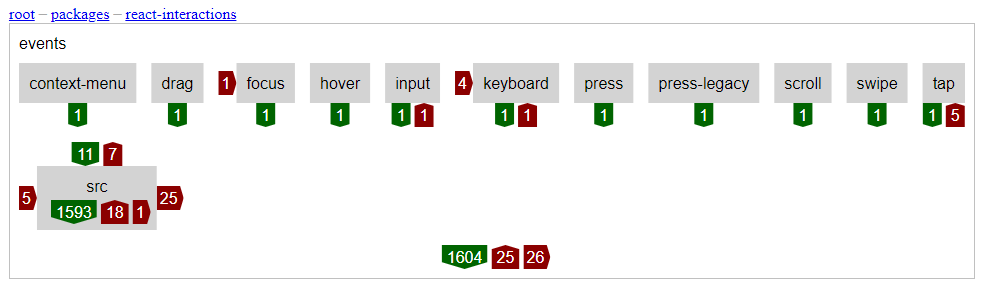
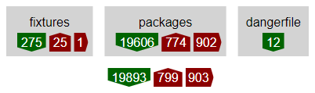
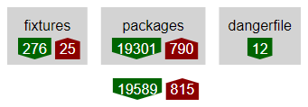
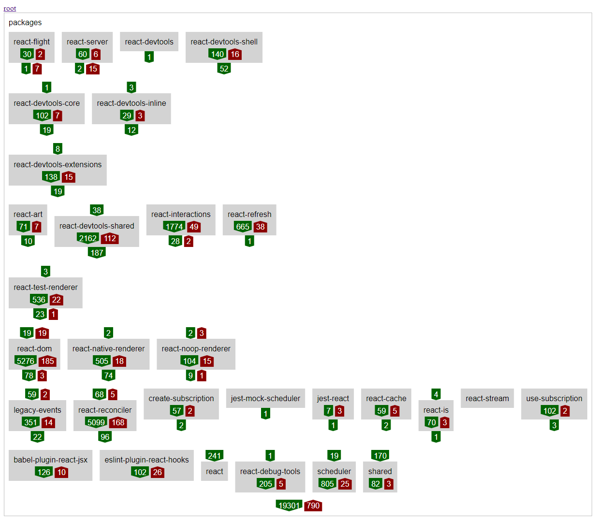
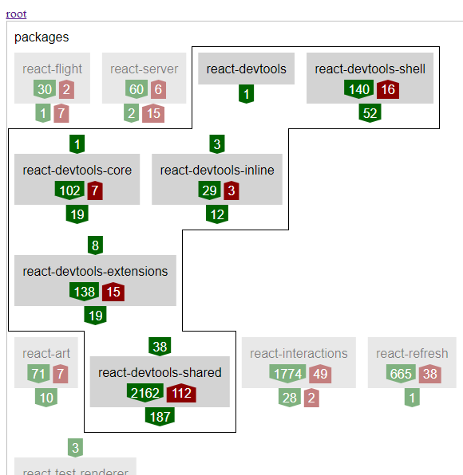
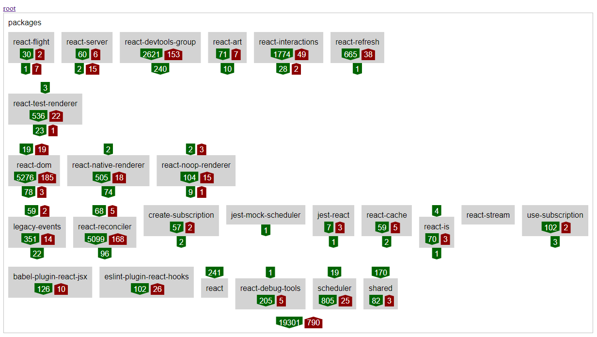
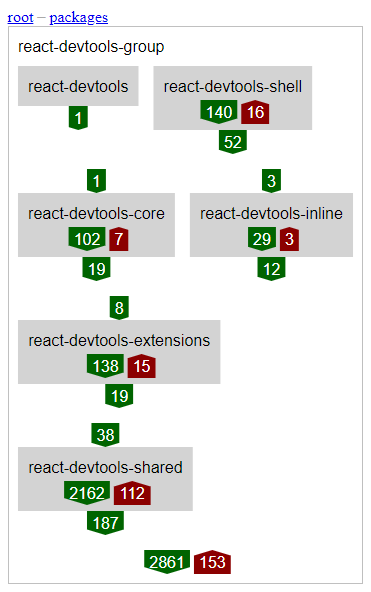
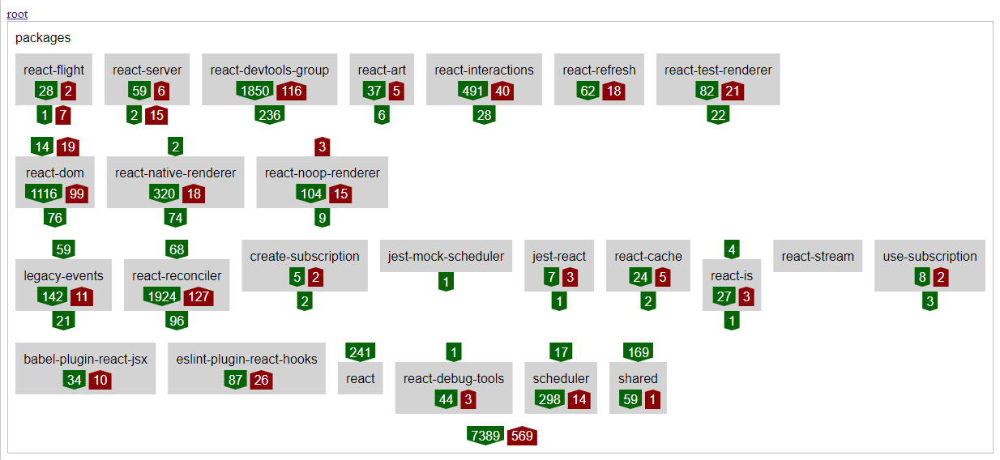
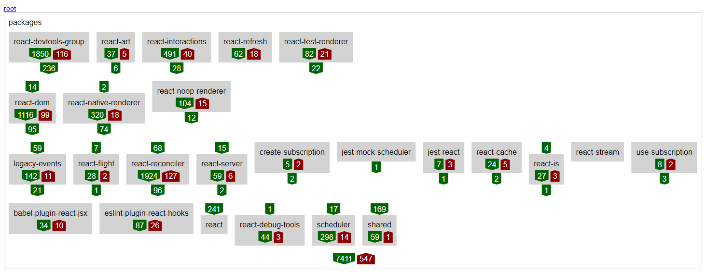

React case study
This case study investigates and demonstrates the capabilities of Eunice, by using Eunice on the JavaScript library React.
The case study isn't intended as a commentary or critique of React. Decisions made during it are constrained by the authors understanding of React. With more insight into React, different choices might be made if Eunice was used by its contributors.
Suggestions to improve the case study are welcome. Hopefully it's helpful to React contributors or to those who have an interest in React.

I've based the case study on the 0f3838a commit in the React repository. I've created a fork to make it easier if you want to follow along:
git clone https://github.com/DevSnicket/react.git react-eunice
cd react-eunice
Eunice can be downloaded from NPM and run without installing using NPX:
npx eunice
You will be prompted to accept a EULA. Eunice is free to use on open source projects, and its free to use for education and training. Therefore contributions to React and following along with this case study both qualify. There is also an evaluation period to try Eunice out on closed source commercial software.
syntax
Running Eunice on React without any parameters will raise the following error:
Error: Analysis of file "packages\create-subscription\index.js" raised the following error.
Unexpected token, expected ";" (14:5)
This error is raised because React uses Flow syntax in its JavaScript. Eunice uses Babel to parse JavaScript and a Flow plug-in can be enabled with the option babel-parser-plugins. Some of the Babel parser plug-ins are enabled by default and so will also need to be specified so they aren't disabled when enabling Flow:
npx eunice \
--babel-parser-plugins=classPrivateProperties \
--babel-parser-plugins=classProperties \
--babel-parser-plugins=dynamicImport \
--babel-parser-plugins=flow \
--babel-parser-plugins=jsx
Running Eunice with the Babel plug-ins specified above will raise a further error:
Error: Analysis of file "scripts\prettier\index.js" raised the following error.
'return' outside of function (32:2)
Eunice parses with a Babel source type of module, but the file specified in the error is a script. The option ignore-path-pattern can be used to ignore the "script" directory. I've also included the default ignores and one for babel.config.js. The option is specified with double quotes as the pipe character is used in the regular expression.
npx eunice \
--ignore-path-pattern="(^(\.|babel.config.js|scripts)|node_modules)" \
--babel-parser-plugins=classPrivateProperties \
--babel-parser-plugins=classProperties \
--babel-parser-plugins=dynamicImport \
--babel-parser-plugins=flow \
--babel-parser-plugins=jsx
Analysis with the options above should complete successfully and output a eunice.html file. Opening the file in a browser should show the following:

On the left a text editor is displaying 78,696 lines of YAML produced by Eunice's analysis and processing of React.
On the right is a graphical representation of all the dependencies and the root directories (fixtures and packages) in React. The green and red count arrows represent the dependencies, categorized as follows:
So far, no additional structure has been defined in any stacks, so we see items listed horizontally.
Ideally all dependencies should be matching, shown as counts only in the green down arrows and no red arrows. This would be a demonstration (as far as Eunice JavaScript analysis is currently capable) that dependencies were all unidirectional, including indirect dependencies.

An example of software that’s close to having only unidirectional dependencies is Eunice itself, you can see this by looking at its dogfooding:

You can interact with Eunice's dogfooding here.
file order
Eunice can infer stacks, in JavaScript this includes the order within a file. In the browser, if for example, dangerfile is selected, the contents of the file dangerfile.js are displayed:

The items in the lowest level are all the module import and CommonJS require calls that Eunice automatically moves below the file content. The other two levels have dependencies that don’t match and so have counts shown in red up arrows. By default Eunice expects code within a file to be ordered high level first with more detail as you move down. The option is-file-content-reversed can reverse this:
npx eunice \
--is-file-content-reversed=true \
--ignore-path-pattern="(^(\.|babel.config.js|scripts)|node_modules)" \
--babel-parser-plugins=classPrivateProperties \
--babel-parser-plugins=classProperties \
--babel-parser-plugins=dynamicImport \
--babel-parser-plugins=flow \
--babel-parser-plugins=jsx
The file will then show with all matching green dependency counts (after reloading the browser):

Looking at the root directory, a lot more of Reacts dependencies are now shown as matching in green:

There are still 1,592 dependencies, shown in a red horizontal arrow, that are between items that don’t have a structure defined yet.
codebase conventions
There are often conventions in codebases and in React there are many instances of directories that are always either above or below all the other directories. One example is that the __tests__ directory depends on what it tests. Another example is that the rest of the code depends on the shared directory. This is represented below in YAML, with "existing" being used as placeholder for items not specified:
- [ forks, __tests__ ]
- - existing
- - src
- - shared
The YAML above can be saved into a file (.eunice-stack-modify.yaml) and that file can be specified with the modify-stacks-file option so that Eunice modifies all stacks with the following option:
npx eunice \
--modify-stacks-file=.eunice-stack-modify.yaml \
--is-file-content-reversed=true \
--ignore-path-pattern="(^(\.|babel.config.js|scripts)|node_modules)" \
--babel-parser-plugins=classPrivateProperties \
--babel-parser-plugins=classProperties \
--babel-parser-plugins=dynamicImport \
--babel-parser-plugins=flow \
--babel-parser-plugins=jsx
You can see examples of what effect this has in React by looking inside packages/react-interactions/events and its sub-directory src/dom:

This reduces the count of mismatching dependencies in the red horizontal arrow by over a third, from 1,592 to 903:
directory specific
YAML stack files of structure like the one above can also be created for individual directories. Eunice automatically does this when files named .eunice-stack.yaml are saved with the code. I've worked through React and created 36 stack files. If you want to view the files I've created a branch called with-stacks was created and the stack files added in commit 4dffcae.
The stacks have removed all the remaining 903 unstructured dependencies; however, I wasn't able to define structures that would make all dependencies go in the same direction. These mismatching dependencies are shown in the red up arrow count of 815 below:
You can see more specific dependency count arrows and the structure I chose, by looking inside the packages sub-directory:
groups
The packages directory has enough items and levels that it can be hard to remember what all the dependency relationships are. This can be improved by grouping items that share concepts and dependency relationships.
The six sub-directories highlighted below all relate to devtools, have dependency counts that don't require their distribution across the stack and so could be grouped:
To investigate how this might look the Eunice stack file in the packages directory can be modified. I've added a new item named react-devtools-group and moved the six related items inside it:
- - existing
- - id: react-devtools-group
dependencyPermeable: true
items:
- [ react-devtools, react-devtools-shell ]
- [ react-devtools-core, react-devtools-inline ]
- - react-devtools-extensions
- - react-devtools-shared
- [ react-art, react-interactions, react-refresh ]
- - react-test-renderer
- [ react-dom, react-native-renderer, react-noop-renderer ]
- [ legacy-events, react-reconciler ]
- [ create-subscription, jest-mock-scheduler, jest-react, react-cache, react-is, react-stream, use-subscription ]
- [ babel-plugin-react-jsx, eslint-plugin-react-hooks, react, react-debug-tools, scheduler, shared ]
The new item has been marked in the YAML as dependencyPermeable so that Eunice's dependency resolution will look inside it even though it won't be specified in the code's import statement paths.
Re-running the analysis and reloading the web page shows that this makes the packages directory clearer without adding any mismatching dependencies:
Selecting the new react-devtools-group shows its stack:
To make this grouping more permanent and implicit the Eunice stack above could be replaced with a new sub-directory in the code.
The example above was an obvious group to create, with the shared concept (devtools) already defined, high cohesion within its items and a simple relationship with the rest of the system. To get the same effect elsewhere, more detailed work might be required, directly in the code, moving small pieces around from across many parts of a system.
tests
While looking through the React code base I noticed some of the package scoped bi-directional dependencies were only in its tests. This can be investigated by modifying the ignore path pattern to exclude test related directories:
npx eunice \
--ignore-path-pattern="(^(\.|babel.config.js|scripts|fixtures)|node_modules|__tests__)" \
--modify-stacks-file=.eunice-stack-modify.yaml \
--is-file-content-reversed=true \
--babel-parser-plugins=classPrivateProperties \
--babel-parser-plugins=classProperties \
--babel-parser-plugins=dynamicImport \
--babel-parser-plugins=flow \
--babel-parser-plugins=jsx
Re-running the analysis and reloading the web page shows that with tests ignored, the number of sub-directories with no bi-directional dependencies at the package scope has improved. Note that Eunice has detected that react-test-renderer no longer needs to be stacked in a separate level and so has automatically moved it up into the level above:
The remaining red mismatching dependency arrows across packages are from react-flight and react-server onto react-dom. Modifying the packages directory stack can, for the first time, get all the package scoped dependencies uni-directional. This can be done by moving react-flight and react-server below react-dom:
- - existing
- - id: react-devtools-group
dependencyPermeable: true
items:
- [ react-devtools, react-devtools-shell ]
- [ react-devtools-core, react-devtools-inline ]
- - react-devtools-extensions
- - react-devtools-shared
- [ react-art, react-interactions, react-refresh ]
- - react-test-renderer
- [ react-dom, react-native-renderer, react-noop-renderer ]
- [ legacy-events, react-flight, react-reconciler, react-server ]
- [ create-subscription, jest-mock-scheduler, jest-react, react-cache, react-is, react-stream, use-subscription ]
- [ babel-plugin-react-jsx, eslint-plugin-react-hooks, react, react-debug-tools, scheduler, shared ]
We can now see in Eunice that the only dependencies across the packages sub-directories are those from tests, as there are no package scoped mismatching red arrows:
conclusion
You can interact the case study here.
The structures I've chosen for React are what I think are best fit for the current dependencies. This structure might not be ideal for React and its future development. It might be beneficial to structure differently, which would have higher counts of current mismatching dependencies, but would encourage contributors to change the code and its dependencies to better match that intended structure.
I defined these structures for React as an individual; however, by committing stack files to source control and running Eunice (e.g. in continuous integration), teams could collaborate and collectively define and improve the structure.